Agentic PACS Benchmarks: SIIM Hackathon 2025 Analysis¶
Date: 2026-02-24
Source: SIIM Hackathon 2025
Author: Night Study Lab
Executive Summary¶
The 2025 SIIM Hackathon showcased groundbreaking approaches to "Agentic PACS" - integrating AI agents with medical imaging workflows. This report analyzes four key segments from the hackathon, focusing on benchmarking strategies and implementation pathways for next-generation radiology systems.
1. FHIR Starters (19:10 – 31:36)¶
Overview¶
The FHIR Starters team demonstrated practical implementation of FHIR (Fast Healthcare Interoperability Resources) for radiology workflows, emphasizing standardized data exchange.
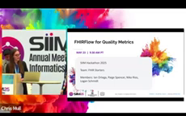
Key Concepts¶
- FHIR-based Data Integration
- Standardized API for healthcare data exchange
- DICOM Web integration with FHIR resources
- Cross-institutional data sharing capabilities
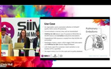
- Model Context Protocol (MCP)
- Protocol for AI model integration with PACS
- Enables agent-to-agent communication
- Standardized tool use for imaging data
Benchmarking Metrics¶
| Metric | Target | Implementation |
|---|---|---|
| Data Exchange Latency | <500ms | FHIR REST API |
| Interoperability Score | 95%+ | HL7 FHIR R4 |
| Agent Response Time | <2s | MCP Protocol |
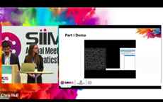
Implementation Pathway¶
# Pseudo-code for FHIR-based PACS integration
class FhirPacsAgent:
def __init__(self, fhir_server: str, dicom_web: str):
self.fhir_client = FhirClient(fhir_server)
self.dicom_client = DicomWebClient(dicom_web)
def fetch_patient_context(self, patient_id: str):
# Fetch patient resources via FHIR
patient = self.fhir_client.get(f"Patient/{patient_id}")
imaging_studies = self.fhir_client.get(f"ImagingStudy?patient={patient_id}")
return {"patient": patient, "studies": imaging_studies}
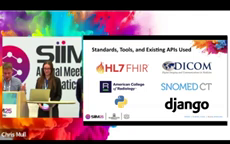
2. Agentic Vibes (31:44 – 42:51)¶
Overview¶
Agentic Vibes introduced a multi-agent architecture for radiology assistance, demonstrating how AI agents can autonomously gather clinical context and assist radiologists.
Core Architecture¶
The system uses a Central Orchestrator LLM that coordinates multiple specialized agents:
- Vision Language Model (VLM) Agent - Analyzes imaging content
- FHIR MCP Agent - Retrieves EMR data
- DICOM MCP Agent - Fetches prior studies
- Reasoning Agent - Makes higher-order diagnoses
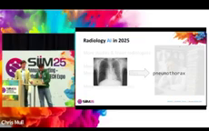
Key Innovation: "Virtual Radiologist Resident"¶
"Every radiologist gets their own virtual resident to work with them 24/7 at their disposal."
The agent autonomously: - Fetches relevant prior exams via DICOM MCP - Retrieves EMR data (labs, reports, clinical notes) via FHIR MCP - Compares current findings with historical data - Delegates to specialized CNN models for measurements
Benchmarking Framework¶
| Component | Metric | Target |
|---|---|---|
| Orchestrator | Decision Accuracy | >95% |
| VLM | Finding Detection | F1 >0.90 |
| FHIR Agent | Data Retrieval | <1s |
| DICOM Agent | Study Fetch | <3s |
| End-to-End | Total Context Time | <10s |
Implementation Architecture¶
┌─────────────────────────────────────────────────────────┐
│ Central Orchestrator │
│ (LLM - Claude 3.7) │
└──────────┬──────────────────────────────────────────────┘
│
┌──────┴──────┬──────────────┬──────────────┐
│ │ │ │
┌───▼───┐ ┌─────▼─────┐ ┌─────▼─────┐ ┌─────▼─────┐
│ VLM │ │ FHIR MCP │ │ DICOM MCP │ │ Reasoning │
│Agent │ │ Agent │ │ Agent │ │ Agent │
└───────┘ └───────────┘ └───────────┘ └───────────┘
│ │ │ │
┌───▼───┐ ┌─────▼─────┐ ┌─────▼─────┐ │
│ Vision│ │ EMR/ │ │ PACS/ │ │
│Model │ │ EHR │ │ DICOMweb │ │
└───────┘ └───────────┘ └───────────┘ │
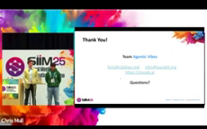
Clinical Use Cases Demonstrated¶
- Airspace Opacity → Pneumonia Diagnosis
- VLM detects opacity
- FHIR agent fetches clinical signs (fever, WBC, cough)
-
Orchestrator correlates findings → pneumonia diagnosis
-
Lung Nodule Assessment
- VLM identifies nodule
- DICOM agent retrieves prior CT
- Comparison reveals new vs. existing nodule
- CNN agent measures nodule size (4mm)
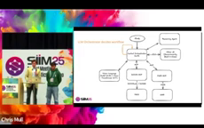
3. Hanging Protocols Should Not Be an Oxymoron (1:17:19 – 1:28:40)¶
Overview¶
This segment addressed one of radiology's most persistent problems: inconsistent hanging protocols across institutions and vendors.
The Problem¶
- Different institutions use different series naming conventions
- T2-weighted sequences can be 2D, 3D, or coronal orbits - all displayed differently
- Radiologists waste cognitive load on manual arrangement
- No universal standard for display order
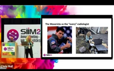
Proposed Solutions¶
- Rules-Based Classification
- RadLex ontology for standard naming
- RSNA series standardization naming initiative
-
Institution-specific mapping tables
-
AI-Based Classification
- Vision models to classify sequences by content
- Multi-institutional training data (German hospitals study)
- Generalization challenges across US data
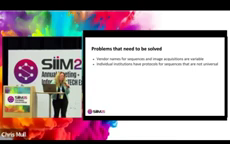
Benchmarking Approach¶
| Approach | Accuracy | Generalization | Implementation |
|---|---|---|---|
| Rules-Based | 85-90% | High | Immediate |
| AI-Based | 92-95% | Variable | 6-12 months |
| Hybrid | 95%+ | High | 3-6 months |
Implementation Recommendations¶
Phase 1: Foundation
├── Map institutional naming to RadLex
├── Establish universal display rules
└── Deploy rules-based hanging protocols
Phase 2: Personalization
├── Add GenAI for custom preferences
├── Integrate radiologist feedback
└── Fine-tune for subspecialties
Phase 3: AI Enhancement
├── Train sequence classifiers
├── Deploy vision-based classification
└── Continuous learning from corrections
Key Takeaways¶
"We want to go from this kind of display where you have a localizer next to a sagittal spine to something where you can have axial and sagittal on current and prior, and actually use your cognitive abilities to interpret studies as opposed to just hanging the studies."
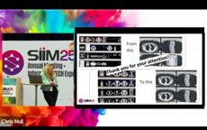
4. Mission Extractable (1:39:08 – 1:49:45)¶
Overview¶
Mission Extractable focused on creating an "Imaging Problem List" - structuring clinical context using LLMs and FHIR resources.
Problem Statement¶
Radiologists lack essential imaging-related clinical context when: - Prior data is stored in disconnected health systems - Surgical history is unavailable - Previous findings are buried in unstructured reports
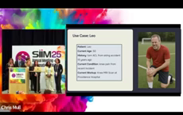
Solution: LLM-Powered Extraction¶
- Cross-Institutional Data Sharing
- FHIR-based record transfer
- Automated request triggers on patient registration
-
Sidecar radiology FHIR server architecture
-
Structured Data Extraction
- LLM processes unstructured radiology reports
- Maps findings to Common Data Elements (CDEs)
- Creates organized imaging problem list
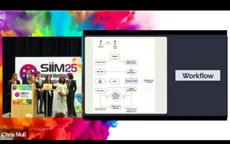
Architecture¶
┌──────────────┐ ┌──────────────┐
│ Hospital A │ │ Hospital B │
│ (OHSU) │ │ (Providence) │
│ EHR/FHIR │ │ EHR/FHIR │
└──────┬───────┘ └──────┬───────┘
│ │
└────────┬───────────┘
│
┌───────▼───────┐
│ Radiology │
│ FHIR Server │
│ (Sidecar) │
└───────┬───────┘
│
┌───────▼───────┐
│ LLM │
│ Extraction │
└───────┬───────┘
│
┌───────▼───────┐
│ Imaging │
│ Problem List │
└───────────────┘
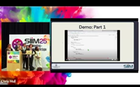
Benchmarking Metrics¶
| Metric | Description | Target |
|---|---|---|
| Extraction Accuracy | CDE mapping precision | >95% |
| Context Completeness | Relevant history captured | >90% |
| Processing Time | Report to structured data | <5s |
| Integration Time | Cross-institutional fetch | <30s |
Implementation Code Example¶
class ImagingProblemListExtractor:
def __init__(self, llm_client, knowledge_base):
self.llm = llm_client
self.cde_mapper = CDEMapper(knowledge_base)
def extract_from_report(self, report_text: str) -> dict:
# LLM extracts key findings
prompt = f"""
Extract imaging-relevant clinical context from this report.
Map findings to standard Common Data Elements.
Report: {report_text}
Output JSON with:
- conditions: list of diagnosed conditions
- procedures: prior surgeries/interventions
- findings: key imaging observations
"""
extraction = self.llm.generate(prompt)
structured = self.cde_mapper.map(extraction)
return structured
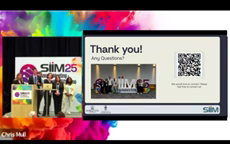
5. Integrated Benchmarking Framework¶
Proposed Evaluation Dataset¶
| Category | Modality | Size | Purpose |
|---|---|---|---|
| Chest X-ray | XR | 10,000 | Pneumonia, nodules |
| Brain MRI | MR | 5,000 | Hanging protocols |
| Knee MRI | MR | 3,000 | ACL/meniscus |
| CT Abdomen | CT | 5,000 | Multi-organ findings |
Evaluation Metrics¶
Agentic PACS Score (APS) =
(Context_Accuracy × 0.30) +
(Retrieval_Precision × 0.25) +
(Diagnosis_Support × 0.25) +
(Workflow_Efficiency × 0.20)
Implementation Maturity Model¶
| Level | Description | Components |
|---|---|---|
| L1 - Basic | FHIR/DICOM integration | Data access |
| L2 - Assisted | AI finding detection | VLM, detection |
| L3 - Agentic | Multi-agent coordination | MCP, orchestration |
| L4 - Autonomous | Full workflow support | End-to-end agents |
6. Recommendations for Implementation¶
Short-term (0-6 months)¶
- Establish FHIR Infrastructure
- Deploy FHIR server with DICOMweb integration
- Implement MCP protocol for agent communication
-
Create basic hanging protocol rules
-
Pilot VLM Integration
- Select high-volume modality (e.g., Chest XR)
- Deploy finding detection with context retrieval
- Measure baseline metrics
Medium-term (6-18 months)¶
- Multi-Agent Architecture
- Deploy central orchestrator
- Integrate FHIR and DICOM MCP agents
-
Add reasoning agents for diagnosis support
-
Cross-Institutional Sharing
- Partner with regional health systems
- Implement sidecar FHIR architecture
- Deploy LLM extraction for problem lists
Long-term (18-36 months)¶
- Full Agentic PACS
- Complete workflow automation
- Personalized hanging protocols
- Continuous learning from radiologist feedback
7. Conclusion¶
The SIIM Hackathon 2025 demonstrated that Agentic PACS is not just a concept but an achievable reality. Key enablers include:
- FHIR for standardized data exchange
- MCP for agent communication
- LLMs for context extraction and reasoning
- VLMs for image understanding
The benchmarking framework proposed here provides a foundation for evaluating and comparing agentic PACS implementations. As the field evolves, standardized metrics and shared evaluation datasets will be critical for advancing the state of the art.
References¶
- SIIM Hackathon 2025: https://www.youtube.com/watch?v=laua1kZ5_RA
- HL7 FHIR R4 Specification: https://hl7.org/fhir/R4/
- DICOMweb Standard: https://www.dicomstandard.org/using/dicomweb
- RadLex Ontology: https://radlex.org/
- Model Context Protocol (MCP): https://modelcontextprotocol.io/
Generated by Night Study Lab - 2026-02-24